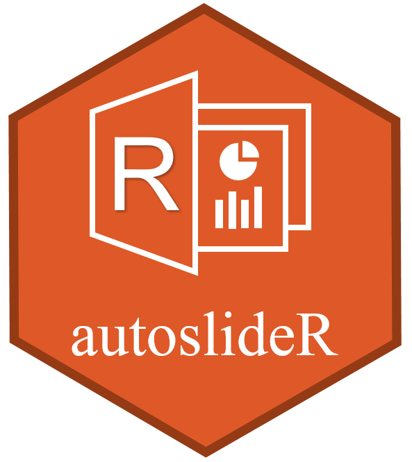

Overview
autoslider.core creates a set of standard table templates that are often used in Study Results Endorsement Plan. It aims to reduce the amount of work when creating slides and avoid the duplicated effort between statisticians and programmers.
Installation
autoslider.core is available on CRAN and you can install the latest released version with:
install.packages("autoslider.core")or you can install the latest development version directly from GitHub by running the following:
# install.packages("pak")
pak::pak("insightsengineering/autoslider.core")